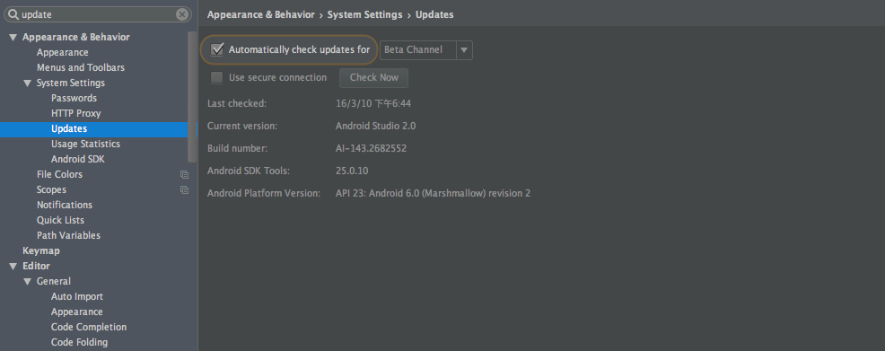
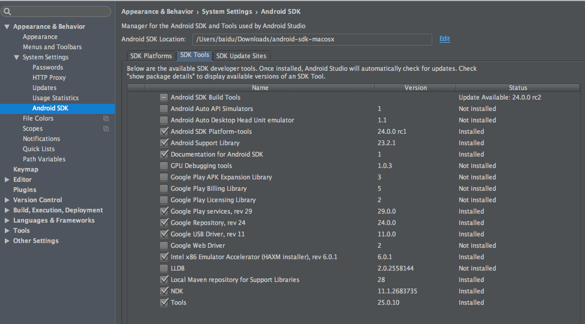
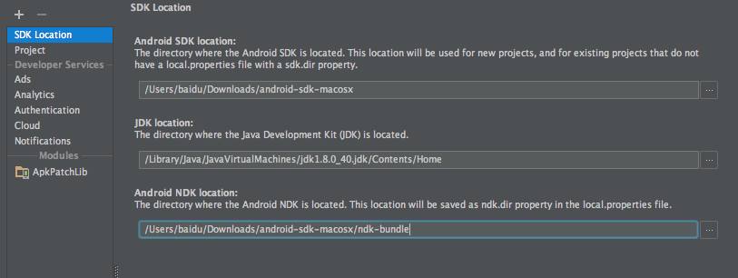
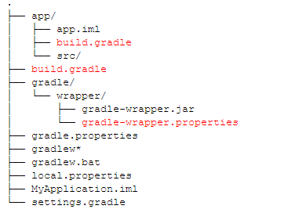
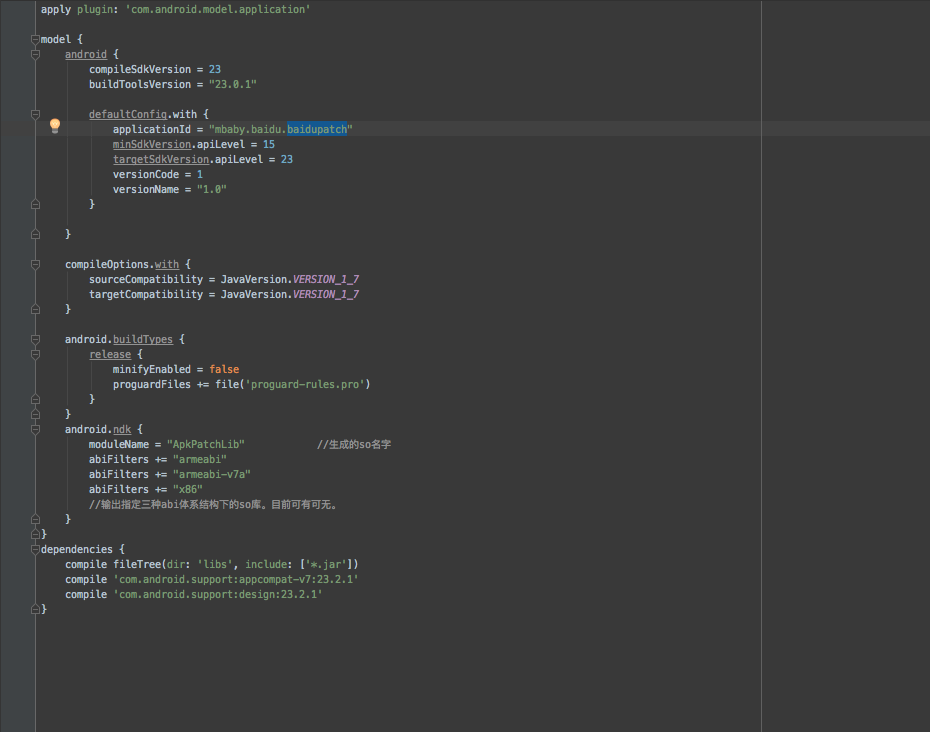
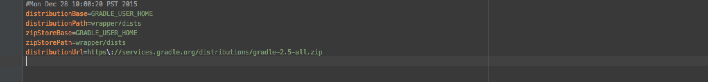
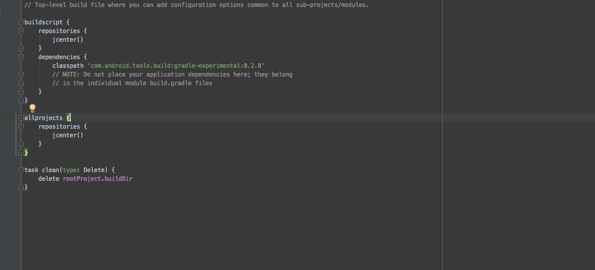
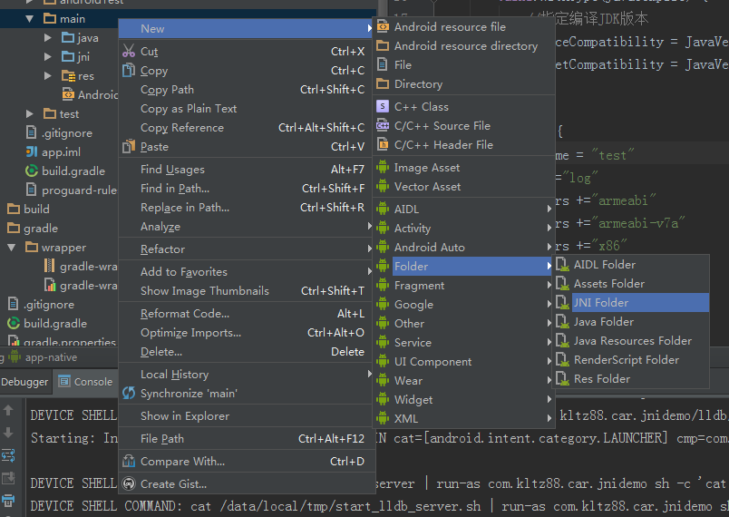
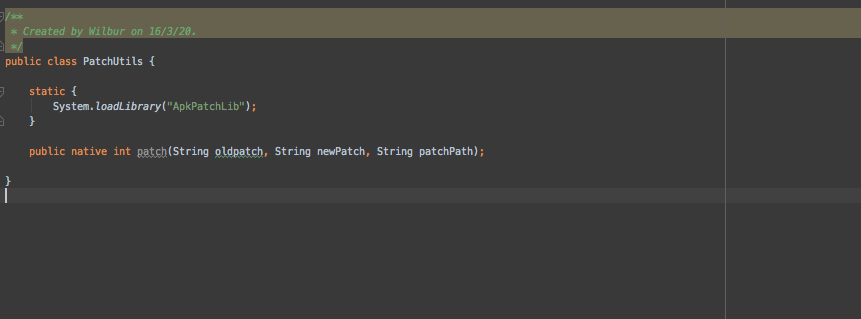
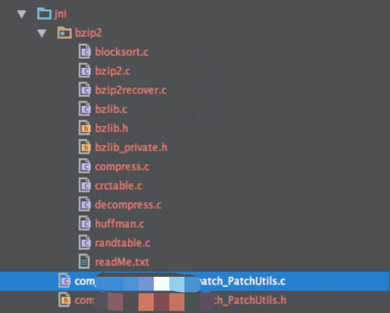

Android增量更新的坑&坑
在前面:这篇文章是基于Mac系统，Window估计思路差不多。(>_<)！！！
背景：
现在移动应用市场APP随着的需求的增加包体积也在不断的增大，以及应用版本不断的发布，按照通畅做法，APP升级会需要很多的流量，而且还慢，这种情况下用户体验需要提高，需要找到一种轻量升级方案。在Google I/O 上提及的 Smart App update，即应用增量升级，或者叫做差分升级的做法，并在新版的Google Play以及国内各大应用分发平台已经可以很好的做到这点。目前我们也计划采用增量的方式升级应用。
增量升级的原理：
- 先生成新版本与旧版本之间的差分包
- 手机Client端获取相对应版本的差分包，旧版本的APK与差分包，合成一个新的APK
- 校验新合成的微博客户端文件是否完成，签名时候和已安装客户端一致，如一直，提示用户安装
- 新的APK一般放在SD卡上，安装完成后从SD卡删除，这些都是由系统自动处理
OK,Let’s GO…..
差分（新版APK与旧版APK）
差分（Diff）工具使用的是bsdiff,这个工具可以通过MAC Terminal cmd: which bsdiff查看是否安装，有的貌似已经自带了, 使用的方法 bsdiff oldFilePath newFilePath patchFilePath
合成 (将下载到的差分包和旧版APK合成成新的APK）
合成工具是batch， 这个mac 貌似也已经默认安装了，同样可以通过上面的方法查看
NDK编译获取到.so文件；注意这里是坑&坑的聚集地，首先配置NDK编译环境
(1)从Android Studio 1.3 Beta1开始，就支持了NDK。不过需要使用的是一个全新的实验性的gradle构建工具（继续往下看有介绍）。官方地址http://tools.android.com/tech-docs/new-build-system/gradle-experimental，英文好的可以直接看原文
目前使用的最新的是Android Studio2.0版本 
(2)使用Android Studio内置的SDK管理器下载NDK 
(3)然后：点击File -> Project Structure ->出现下图为Android NDK选择路径 
(4)接下来要修改的被标红的文件如下三个： 
app Moudle内的build.grade 修改：
- com.android.application 改为 com.android.model.application
- 原来的基础上加一个model{}
- 键值对（Key - Value）都要用”=“号
- defaultConfig 改为 defaultConfig.with
- 添加compileOption.with{},以及相应的编译环境
- buildTypes 修改为 android.buildTypes{}
- 添加android.ndk{},以及里面的相应配置
最后就是这个样子 
(5)并且需要gradle 2.5的支持，将gradle/gradle-wrapper.properties中的版本修改为2.5
distributionUrl=https\://services.gradle.org/distributions/gradle-2.5-all.zip

(6)首先需要将根目录下的gradle修改为实验性的gradle
classpath 'com.android.tools.build:gradle-experimental:0.2.0'
最终是这样的 
(7)在android.ndk中进行ndk的配置，模块名字是必须的，并且支持armeabi，armeabi-v7a，x86三个平台。
然后增加jni目录，在main上右键新建jni目录 
(8)接下来创建一个工具类： 
(9)继续点开AS的Terminal标签，默认进入到该项目的app文件夹下。我在windows平台下输入如下命令跳转到class中间文件生成路径：
xxxxx\app> cd build\intermediates\classes\debug
然后执行如下javah命令生成h文件。
xxxxx\debug> javah -jni 包名+类名（例如：PathUtils）
执行完之后你可以在文件夹app\build\intermediates\classes\debug下看见生成的 .h头文件为：
包名+类名（例如：PathUtils）.h
(10)在得到.h文件后在创建一个.c文件，最后是这样  (11)编译后的.so文件在哪 ，在app/build/intermediates/binaries/debug/目录下
(12)编译好的.so文件用到其他地方时保证包名和编译时的包名一致
(13)注意全程并没有用到Android.mk文件
抽空把demo分享出来 )>_<(
常见的异常如下，请对号入座：
- 所有值的设置都要写成 xxx = yyyy的形式，比如： applicationId = "com.zyp.ndktest" （自动生成的gradle 则可能是： applicationId = "com.zyp.ndktest" ），否则会爆这种错误：Error:Cause: org.gradle.api.internal.ExtensibleDynamicObject， 当出现此类错误，检查是否都用了 “=”的方式。
- buildTypes 需要从android{} 中取出来，写成android.buildTypes{}的形式，否则会出现这种错误：Error:Unable to load class 'org.gradle.nativeplatform.internal.DefaultBuildType_Decorated'.
此外，自动生成的buildTypes的形式和上面的也不一样为以下的形式：
release { minifyEnabled false proguardFiles getDefaultProguardFile('proguard-android.txt'), 'proguard-rules.pro' }需要改成上面文件中的格式，否则会报这种错误：Error:No signature of method: org.gradle.model.ModelMap.minifyEnabled() is applicable for argument types: (java.lang.Boolean) values: [false]
defaultConfig{} 需要写成defaultConfig.with{} 的形式，否则会报这种错误：Error:Cause: com.android.build.gradle.managed.AndroidConfig_Impl
在defaultConfig.with{} 中 需要写成
minSdkVersion.apiLevel = 19 targetSdkVersion.apiLevel = 23也就是比自动生成的多 .apiLevel ，否则会报这种错误：Unable to load class com.android.build.gradle.managed.ProductFlavor_Impl
增加compileOptions.with{} 需要选择JavaVersion.VERSION17，否则会报这种错误：Bad class file magic or version
2016/03/23下午于北京，天气很好 转载请注明链接：谢谢)>_<(